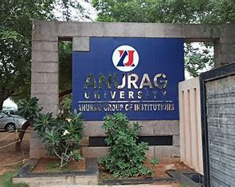

Anurag University is a Private University located in Venkatapur, Medchal-Malkajgiri district, Hyderabad, Telangana, India. Established in 2020, and is one of the First Private Universities in the State of Telangana. The Institution currently offers 15 Undergraduate Programs, 10 Postgraduate Programs and 9 Doctoral Programs through its Schools of Engineering, Management, Pharmacy, Agriculture and Medical Sciences.
The University is spread in about 100 acres in the eastern part of Hyderabad. The University is a kilometer away from the NH163 and is connected through TSRTC.
Anurag University consists of 8 Academic Blocks. It also has separate blocks for Examination Branch and Administration. The University also has an in-house Stationary & Print Center - Readers, State of the Art Auditorium - APJ Abdul Kalam Hall
Anurag University is established as a Private State University through Ordinance No. 1/2020, dated: 20.05.2020 as per the Telangana State Private Universities Act No. 11 of 2018. Our primary focus is to provide a high quality education in Undergraduate, Postgraduate and Doctoral programs of various disciplines.
Central Library with seating capacity of over 500 students having an area of 30000 square feet.
The University has a Spacious Central Cafeteria maintained by Isthara Parks, a start-up based in Hyderabad offering North-Indian, South-Indian, Chinese & Continental Cuisines.
Central Cafeteria also has outlets of The Frankie House, Choco Bite, Mr. Munch Box and Burger King.
The University provides accommodation facilities for boys and girls
Anurag University is a private university located in Hyderabad, Telangana. Our primary focus is to provide a high-quality graduate, postgraduate and doctoral education in engineering, pharmacy and management fields. Anurag University is established through Ordinance No: 1/2020, dated: 20.05.2020 as per the Telangana State Private Universities Act No: 11 of 2018. Subsequently the Ordinance No: 1/2020 has come to an Act No: 13 of 2020 on 19.09.2020.